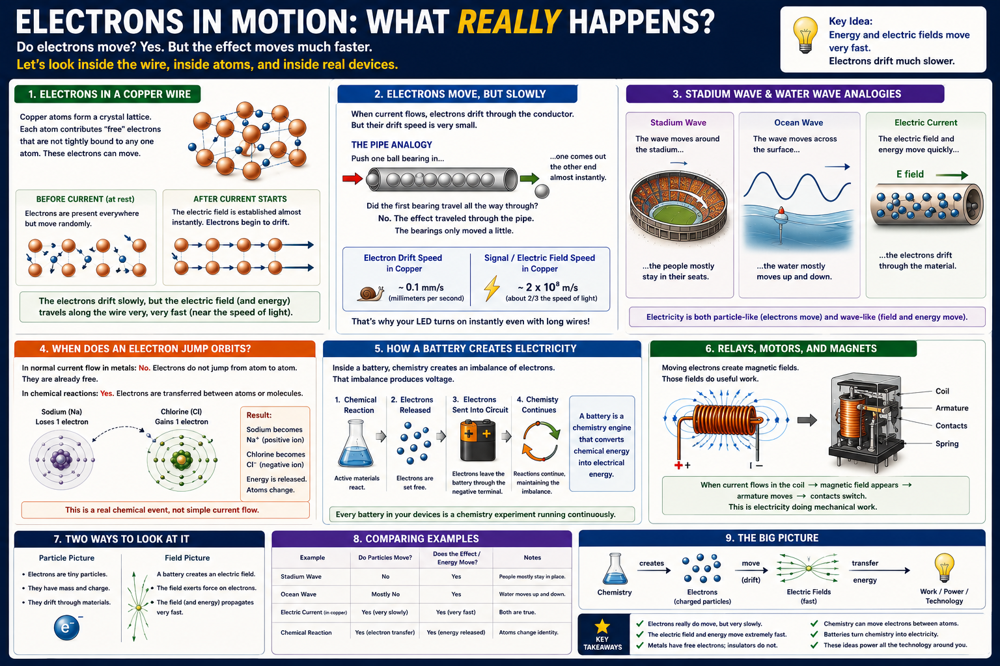

Particles drift slowly
In copper, mobile electrons wander randomly. When voltage is applied, their motion gains a slight net direction.
Electronics · Fields · Current · Transistors
A lesson for Klins on what really happens in a wire, why the electrical effect moves faster than individual electrons, how batteries and coils create useful motion, and how NPN transistor junctions use electric fields to control current.

The wire already contains mobile charge carriers before the circuit is energized.
In copper, mobile electrons wander randomly. When voltage is applied, their motion gains a slight net direction.
The electric field propagates through the conductor at a large fraction of the speed of light.
Energy transfer through the electromagnetic field is what allows a distant LED or relay to respond almost immediately.
Electron drift and signal propagation are not the same thing. Electrons can move only a tiny distance while the electrical influence travels through the whole circuit.
These models help separate local particle motion from fast-moving effects.
Push one bearing into a full pipe and another comes out the far end quickly. The disturbance moved through the line; no single bearing crossed the whole pipe.
The wave travels around the stadium while most people remain near their seats.
Energy travels across the surface while most water moves locally up, down, and in small loops.
Ordinary current in metal is not the same as a chemical reaction.
In copper, electrons are already delocalized. They drift through the shared electron system rather than hopping from atom to atom as a chemical event.
In reactions, electrons may be transferred between atoms or molecules. Sodium losing an electron to chlorine is a true change in chemical identity.
Chemistry establishes the voltage that drives the field.
Active materials react and separate charge.
The terminals develop different electrical potentials.
Connecting a path allows the electric field to establish through the circuit.
Electrons drift and the field transfers energy to the load.
An NPN transistor controls a large current with a much smaller base input.
The emitter contains many mobile electrons and is heavily doped so it can inject carriers efficiently.
The base is very thin and lightly doped. A small base-emitter current changes the electric-field conditions at the junction.
The collector gathers most electrons that cross the base and carries the larger controlled current.
The base-emitter junction behaves like a forward-biased diode.
Without sufficient forward bias, the depletion region blocks substantial carrier injection. The transistor is effectively off.
Raising the base above the emitter reduces the junction barrier and allows electrons to enter the base region.
Because the base is thin, most injected electrons cross it and are swept into the collector by the collector-base electric field.
This is how a small GPIO signal controls a larger load.
A Raspberry Pi or Arduino output supplies a small current through a base resistor.
The relay coil, fan, buzzer, or lamp draws current from its own supply through the transistor.
In a common low-side switch, the emitter connects to ground and the transistor completes the load’s return path.
These operating states explain how NPN transistors behave in amplifiers and switches.
Base-emitter drive is too small. Collector current is nearly zero. For switching, this is the OFF state.
Collector current responds to base drive. This region is used for analog amplification.
The transistor is driven fully on and the collector-emitter voltage becomes small. For switching, this is the desired ON state.
The base does not directly supply all the load current. It changes the junction conditions that permit a much larger collector-emitter current. That is why a low-power GPIO pin can control a relay coil or motor through a transistor.
Moving charge creates magnetism, and magnetism creates mechanical work.
Current through copper wire produces a magnetic field that moves an armature and changes contacts.
Current in coils interacts with magnetic fields to produce torque.
When coil current stops, the collapsing magnetic field creates a voltage spike. A flyback diode gives that current a safe path.
Projects for connecting fields, charge, and transistor behavior.
Use a GPIO pin, base resistor, NPN transistor, LED, and load resistor. Measure base, collector, and emitter voltages.
Drive a relay coil through an NPN transistor and observe why the diode is placed across the coil.
Change the base resistor and compare collector-emitter voltage and load current.
Measure base current and collector current in the active region and compare their ratio.
Compare direct load driving with transistor isolation and explain why the transistor protects the controller pin.
Circuits make sense when you keep two pictures in mind at once: particles drift through materials, while fields establish forces and transfer energy quickly. NPN transistors are a perfect example—small changes at one junction reshape the field conditions and control a much larger current elsewhere.